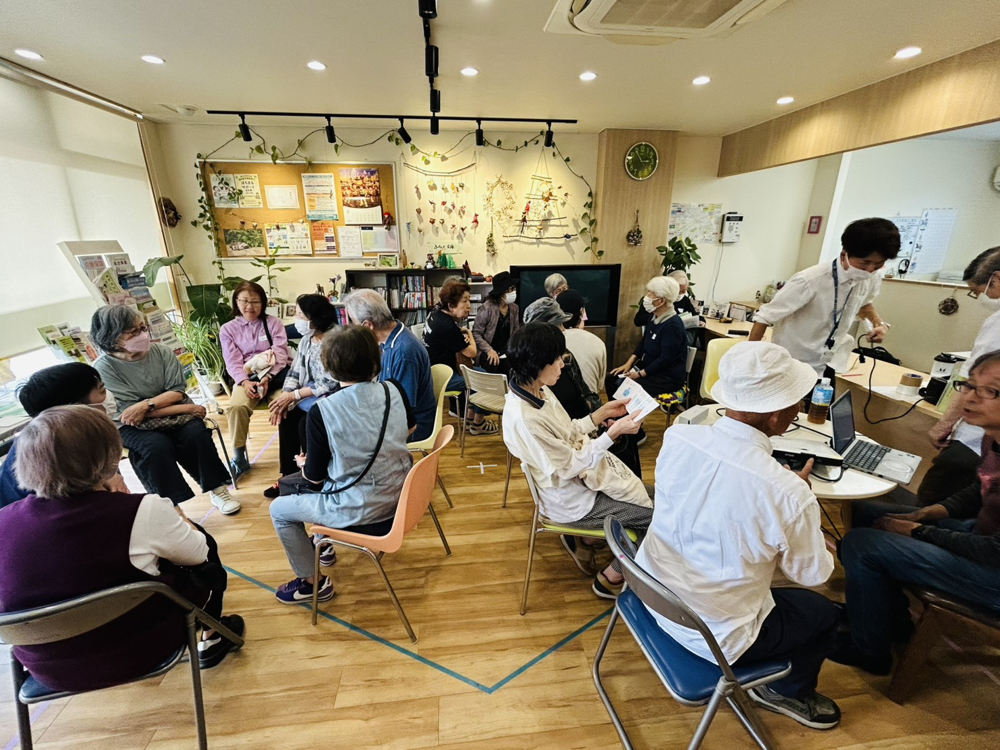

疲れやすい・元気がでない（フレイル）
以前より体力が落ちた、何となくやる気が起きない。年齢のせいと諦める前に、心身の「虚弱（フレイル）」をチェックしてみませんか？
このようなお悩みはありませんか？
-
以前に比べて、歩く速度が遅くなったと感じる
-
これまでは楽しめていた趣味や外出が、少し億劫になった
-
半年間で2~3kg以上の体重減少があった（意図せず）
-
ペットボトルのキャップが開けにくくなるなど、握力の低下を感じる
なぜ「フレイル」が重要なのでしょうか？
フレイルとは、健康な状態と要介護状態の「中間」の時期を指します。多くの人が「歳だから仕方ない」と見過ごしがちですが、実はこの時期に適切な栄養と運動、そして社会とのつながりを持つことで、健康な状態に引き返せることが分かっています。
放置するリスク
フレイルを放置すると、インフルエンザなどの感染症重症化や、転倒による骨折のリスクが急激に高まります。気づかないうちに心身の機能が低下し、数年以内に要介護状態になる可能性も高くなります。
べるつりーの統合サポート
身体のケアだけでなく、心と生活のサイクルを整えるアプローチで「元気」を取り戻します。
全身の底上げ
(べるフィット)
全身の血流を促進する低負荷運動で、疲れにくい身体へ。姿勢が整うことで呼吸も深くなり、活力が高まります。
自律神経の調整
(訪問施術)
鍼灸やマッサージで睡眠の質や食欲を改善。内側から「動きたくなる身体」へのコンディションを整えます。
地域とのつながり
(コミュニティ)
地域の居場所づくりやイベントを通じ、社会との接点を維持。孤立を防ぐことが、心の健康を支える最大の予防策です。
解決のイメージ
80代・男性の事例
食が細くなり閉じこもりがちだった方が、地域の「セミナー」をきっかけに相談。最初は週1回の訪問マッサージで全身をほぐし、徐々に体力をつけて現在は「べるフィット」で同世代の方との交流を楽しみながら運動を継続されています。

フレイルへの、べるつりーのアプローチ
体力の衰えや「何となくやる気が起きない」といった状態（フレイル）でお悩みの方へ。
べるつりーでは、心身の両面から活力を取り戻すサポートを行います。まずは「訪問鍼灸マッサージ」で自律神経を整え、睡眠の質や食欲を改善して「動きたくなる身体」へとコンディションを整えます。その後、「べるフィット」や「リーフ」での低負荷運動へとつなげ、全身の血流を促進し疲れにくい身体を作ることで、再び「自分らしい生活」を楽しめるよう支援します。
関連する解決策（サービスの詳細）を見る
現在の状態に合わせた最適なステップをご提案します。本格的な介護が必要になる前に、まずは無料相談へお進みください。
相談窓口へ進む